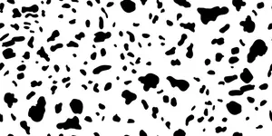

ⲧⲟⲉ, ⲧⲟ S, ⲧⲁⲁⲓ Sf, ⲧⲁⲓⲉ A, ⲑⲟⲓ B nn f m (K), spot: Ge 30 37 S ⲧⲟ ⲉⲩⲟⲩⲟⲃϣ (B ⲕⲏⲕⲥ) λέπισμα; Lev 13 28 S ⲧⲧⲟ sim (B diff) αὐγάζον; Jer 13 23 S ⲧⲟⲉ (var ⲧⲟ, B ⲁⲩⲓ ⲁⲩⲁⲛ) ποίκιλμα; K 76 B ⲡⲓⲑ. (sic all) شامة; El 120 S ⲟⲩⲧⲟⲉ ⲛⲥϭⲓⲙ = ib 90 A; R 1 3 49 S white mules ⲉⲙⲛ ⲗⲁⲁⲩ ⲛⲧⲟ ⲛϩⲏⲧⲟⲩ; iterated: Ge 30 33 B ⲛⲓⲑ. ⲑ. (S diff) διάλευκος, 37 S (B ⲁⲟⲩⲓ ⲁⲟⲩⲁⲛ) ποικίλος, Mor 54 99 Sf sheep ⲛⲁⲩⲏⲛ ⲛⲧ. ⲧ.; ⲣ ⲧⲟ, ⲟ ⲛⲧⲟ, be spotted: Ge 30 35 S (B do) ῥαντός; Va 61 19 B ⲉⲧⲟⲓ ⲛⲑ. in souls, Mor 16 87 S giraffe ⲟ ⲛⲧⲟ ⲧⲟ ⲛⲁⲩⲉⲓ ⲁⲩⲁⲛ (varr ib 15 62 ⲧⲟⲧⲉ ⲧⲟⲧⲉ, BMis 227 ⲙⲓⲛⲉ ⲙⲓⲛⲉ), BMar 66 S body ⲣ ⲧⲟⲉ ⲧ. like pard. Cf ⲑⲟⲩⲑⲟⲩ. V Spg Kopt Etym no 20.
(noun masculine/feminine)
spot [λεπισμα, αυγαζον, ποικιλμα]

complete
| ⲣ ⲧⲟ, ⲟ ⲛⲧⲟ | be spotted2175 | 396b | |||||||
68a
ⲑⲟⲓ B v ⲧⲟ, ⲧⲟⲉ spot.
390b
ⲧⲁⲁⲓ Sf, ⲧⲁⲓⲉ A v ⲧⲟⲉ spot.
396b
See also:
| view | ⲑⲟⲩⲑⲟⲩ B | (verb) intr: to have the skin disease lentigo2788 |